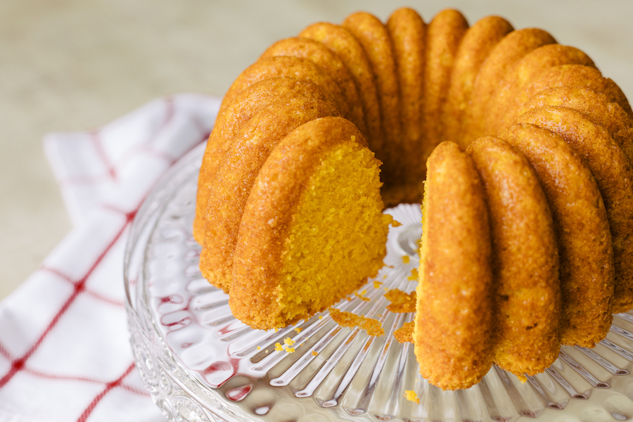

Voltar
Bolo de Cenoura

Confira essa clássica receita de bolo de cenoura simples e fácil, nossa campeã de acessos! O bolo de cenoura é um doce muito popular em nosso país, especialmente no café da manhã e no lanche da tarde. Com sua cobertura de chocolate irresistível e seu interior macio e úmido, ela é uma receita que conquista o coração de todos! Veja com a gente como fazer bolo de cenoura, uma receita prática, preparada com auxílio do liquidificador e perfeita para degustar com um cafezinho!
Lista de Ingredientes
- 1/2 xícara (chá) de óleo
- 3 cenouras médias raladas
- 4 ovos
- 2 xícaras (chá) de açúcar
- 2 e 1/2 xícaras (chá) de farinha de trigo
- 1 colher (sopa) de fermento em pó
Modo de Preparo
- Em um liquidificador, adicione a cenoura, os ovos e o óleo, depois misture.
- Acrescente o açúcar e bata novamente por 5 minutos.
- Em uma tigela ou na batedeira, adicione a farinha de trigo e depois misture novamente.
- Acrescente o fermento e misture lentamente com uma colher.
- Asse em um forno preaquecido a 180° C por aproximadamente 40 minutos.